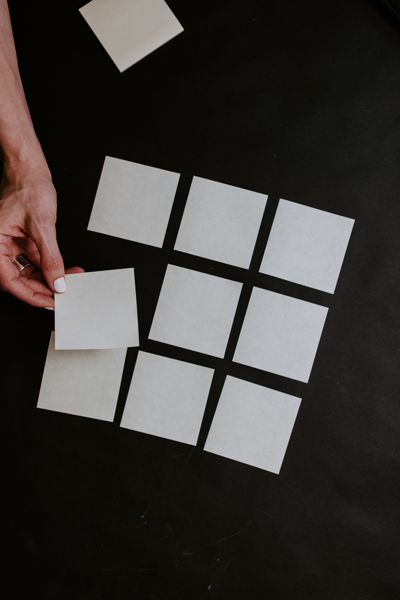

Alex who?
There is much to say about me. More than I am willing to say, more than anybody would be interested enough to read till the end. However, I may say that my autobiography would be longer than 100 pages and it wouldn't turn boring halfway through the story. Imagine a life full of adventures you would rather not have and full of friends who are... well... very nice people. They try. Sometimes.Anyway, think of an overweight man with a lot of bad fortune who has a thing for quality entertainment but also finds ways to have a positive outlook in life.
Sounds interesting? Well, I hope so, 'cause otherwise I might need to rethink my entire life.
You will find more about me somewhere down there. Give it a look. Or not. Your decision.
About Me
My name is Alexander Yurovskyy. People also know me as ExpertOfPlaying, the only german Whovian and as really annoying when I begin speaking of my favourite things. I was born on the 10th of March 2001. Do the math yourself. I was born in Germany, Berlin, but my parents and my older brother come from the Ukrain. You may think I was born learning both german and russian, but in reality I only really learned to properly speak and write german with 14! Ironically, my german is now better than my native tongue.My hobbies include playing Dungeons & Dragons, watching all the good TV shows there are, playing videogames as frequently as possible, and, if my muse catches me, I also love to give myself some projects I can work on. I also do some writing, nothing special.
The uppermeant projects may differ in style from time to time. It can be a project in Unity like downloading objects and making them jump and perform backflips. Other projects of mine included me to go vegetarian for a year. Not for any reason in particular. I just sometimes decide on a whim what I shall do for a certain period of time.


My super awesome projects
I haven't done a lot of things related to my profession yet, but I believe more will come. For now, however, I will boast about two of my projects I did as assignments for some of my classes I took in university.The first project is a simple roundbased concentration card game. I don't have much to say about it. It has no GUI, it works only on one PC. It could work on two PCs, if I would invest some time into it, but I would rather talk about being able to do so instead of actually doing it.
The second project is a bit more interesting. It's an app for people with colour blindness. Depending on the colour blindness a person has the app changes the colours of pictures to colours they can distinguish. On the other hand, the app can also change the colours of a picture for people without any particular colour blindness to simulate what, depending on the selcted options, a colour blind person would see.
Created by Alexander Yurovskyy